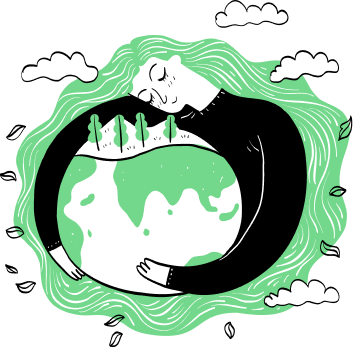

Os 4 R’s
Eco e Bio, qual é a diferença?
ODS
4 R’s, o que são?
Os "4 Rs" são um conjunto de princípios que promovem o consumo consciente e sustentável, visando reduzir o impacto ambiental e minimizar a produção de resíduos. Os quatro "Rs" são: Reduzir, Reutilizar, Reciclar e Recusar. Eles oferecem um guia prático para tomar decisões mais responsáveis em relação ao consumo e ao descarte de materiais.


REDUZIR
A primeira etapa é reduzir a quantidade de resíduos que produzimos. Isso envolve comprar apenas o que é necessário, evitar produtos excessivamente embalados, escolher produtos duráveis e de qualidade e adotar um estilo de vida mais consciente em relação ao consumo.

RECUSAR
Algumas abordagens incluem um quarto "R", que é "Recusar". Isso envolve recusar produtos descartáveis e materiais prejudiciais ao meio ambiente, como plásticos de uso único e produtos excessivamente embalados. Ao recusar esses itens, você evita a entrada deles em sua vida e reduz a demanda por eles no mercado.

REUTILIZAR
A segunda etapa é reutilizar itens sempre que possível. Em vez de descartar algo após um único uso, pense em maneiras de prolongar sua vida útil. Isso pode incluir consertar itens quebrados, doar ou vender itens que você não usa mais e encontrar novos usos para objetos antes de descartá-los.

RECICLAR
A terceira etapa é reciclar os materiais que não podem ser reutilizados. A reciclagem envolve a transformação de resíduos em novos produtos, reduzindo a necessidade de matérias-primas virgens. Certifique-se de separar corretamente os materiais recicláveis e encaminhá-los para os locais de reciclagem apropriados.
ECOLÓGICO, BIODEGRADÁVEL E BIOLÓGICO
Enquanto "ecológico" refere-se a algo que é projetado, produzido ou usado de maneira que cause o mínimo impacto ambiental possível, "biodegradável" diz respeito à capacidade de um material se decompor naturalmente por processos biológicos, como ação de microrganismos, bactérias e fungos, e "biológico" está relacionado à produção de alimentos orgânicos e práticas agrícolas sustentáveis, evitando o uso de pesticidas e fertilizantes químicos sintéticos, bem como organismos geneticamente modificados (OGMs). Isso inclui alimentos, roupas, cosméticos e outros produtos.

Os 193 países membros da ONU, incluindo o Brasil, comprometeram-se a adotar a chamada Agenda Pós-2015, considerada uma das mais ambiciosas da história da diplomacia internacional. A partir dela, as nações trabalharão para cumprir os Objetivos de Desenvolvimento Sustentável (ODS). Os ODS representam um plano de ação global para eliminar a pobreza extrema e a fome, oferecer educação de qualidade ao longo da vida para todos, proteger o planeta e promover sociedades pacíficas e inclusivas até 2030. São 17 objetivos ambiciosos e interconectados que abordam os principais desafios de desenvolvimento enfrentados por pessoas no Brasil e no mundo.